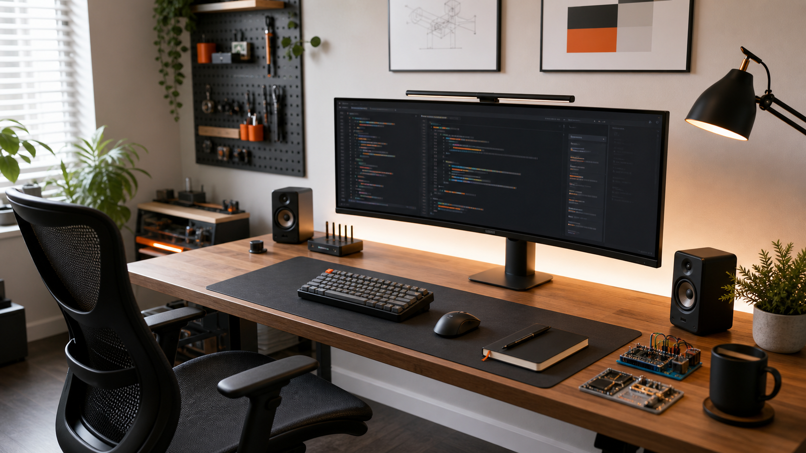

Setup góc làm việc 2026: Tối giản và Hiệu suất
Một góc làm việc tốt không cần quá nhiều đồ. Nó cần giúp bạn ngồi xuống là vào việc nhanh, ít bị xao nhãng, và đủ thoải mái để duy trì nhiều giờ học hoặc code.

Tôi từng nghĩ nâng cấp góc làm việc nghĩa là mua thêm thiết bị. Sau một thời gian làm dự án, học điện tử, dựng nội dung và viết code hằng ngày, tôi nhận ra điều ngược lại: hiệu suất đến từ việc bỏ bớt những thứ không phục vụ phiên làm việc tiếp theo.
Nguyên tắc chính: mọi thứ phải có lý do
Trên mặt bàn chỉ nên có những món được dùng mỗi ngày: màn hình, bàn phím, chuột, sổ tay, đèn và một khu nhỏ cho mạch thử nghiệm. Những món ít dùng hơn được đưa lên pegboard hoặc hộp phân loại. Cách này giữ mặt bàn thoáng, nhưng vẫn không làm chậm quá trình lấy dụng cụ khi cần đo, hàn, test cảm biến hoặc chỉnh prototype.
Checklist nhanh: nếu một món không được dùng trong 7 ngày gần nhất, nó không nên nằm ở vùng trung tâm của bàn.
Màn hình lớn, ít cửa sổ, ít ma sát
Màn hình rộng giúp chia không gian thành ba vùng: code ở giữa, tài liệu bên trái, terminal hoặc preview bên phải. Điểm quan trọng không phải là kích thước màn hình, mà là giảm số lần chuyển ngữ cảnh. Khi đang debug, tôi muốn nhìn thấy lỗi, tài liệu và đoạn code liên quan cùng lúc.
Tôi cũng giữ desktop gần như trống. File tạm đi vào một thư mục inbox, tài liệu dự án đi theo từng folder riêng. Khi môi trường số gọn, não bớt phải quét rác thị giác trước khi bắt đầu.
Ánh sáng và công thái học quan trọng hơn đồ đắt tiền
Một chiếc ghế ổn, độ cao màn hình đúng và ánh sáng mềm giúp làm việc lâu hơn mà không phải trả giá bằng cổ vai gáy. Đèn bàn nên chiếu gián tiếp hoặc lệch góc, tránh phản chiếu lên màn hình. Nếu có ánh sáng tự nhiên, hãy đặt bàn sao cho cửa sổ nằm bên hông thay vì sau màn hình hoặc ngay trước mặt.
Tôi ưu tiên tông màu trung tính: mặt gỗ, đen graphite, trắng và một ít cam để tạo điểm nhấn. Bảng màu này giữ không gian đủ ấm nhưng không làm mất tập trung.
Khu phần cứng cần riêng nhưng không tách rời
Với các dự án robot, Arduino hoặc ESP32, việc để linh kiện rải rác rất dễ biến bàn code thành bàn sửa đồ. Tôi tách một vùng nhỏ cho phần cứng: thảm chống trượt, hộp linh kiện, dây jumper, module đang test và một notebook ghi thông số. Khi xong phiên thử nghiệm, mọi thứ quay về đúng hộp.
Quy tắc này nghe nhỏ, nhưng nó giúp tôi chuyển từ code sang phần cứng trong vài phút mà không phá vỡ nhịp làm việc.
Setup tốt nhất là setup bạn duy trì được
Đừng cố tạo một góc làm việc đẹp chỉ để chụp ảnh. Hãy tạo một hệ thống dễ dọn, dễ ngồi vào, dễ tiếp tục công việc hôm qua. Mỗi cuối ngày, tôi dành 5 phút đưa bàn về trạng thái “sẵn sàng”: đóng notebook, cất linh kiện, gom dây, để lại đúng những thứ cần cho buổi tiếp theo.
Đó là phần tăng hiệu suất thật sự. Không phải thêm 200% tốc độ gõ phím, mà là giảm 200% lực cản trước khi bắt đầu.
Muốn xem thêm quy trình làm việc trong Lab?
Đọc bài tiếp theo